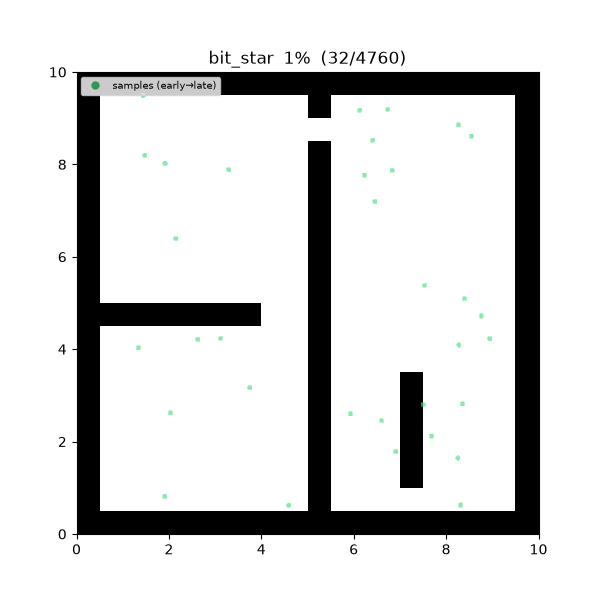
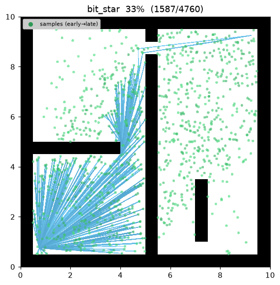
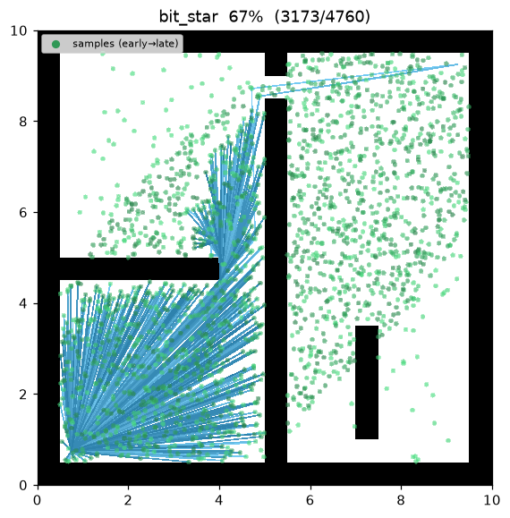
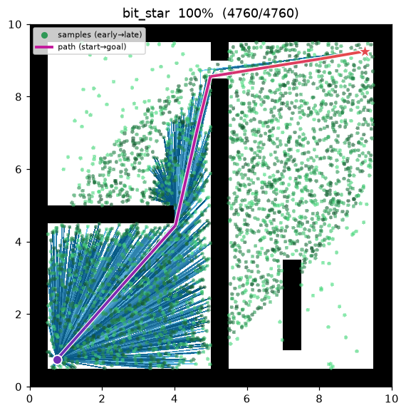
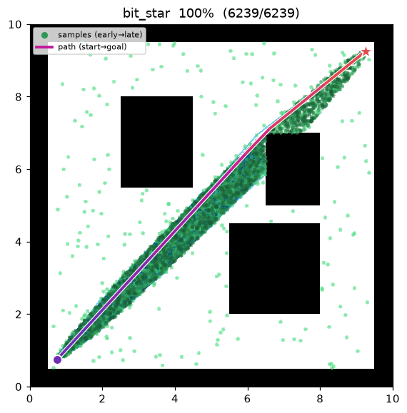

BIT* (Batch Informed Trees)¶
| Item | Description |
|---|---|
| Category | sampling-based, batch, anytime, asymptotically optimal |
| Required capability | SamplingSpace |
| Completeness | probabilistically complete |
| Optimality | almost-surely asymptotically optimal — typically converges faster than RRT*/FMT* |
| Complexity | best-first edge-queue processing per batch + lazy collision checks |
| Original paper | Gammell, Srinivasa & Barfoot (2015) 1 |
Background¶
Gammell et al.1 proposed BIT*, which unifies the roadmap family's batch sampling (RGG), a graph search's heuristic best-first ordering (A*/LPA*), and informed sampling. Samples are processed in batches; within a batch an edge queue is processed best-first by the estimated solution cost
Collision checks are performed only when an edge is dequeued (lazy), and improving edges either connect a sample to the tree or rewire an existing vertex.
Once a solution exists (cost \(c_{\text{best}}\)), later batches draw samples from the informed ellipse (Gammell et al. 20142) — an ellipse with foci at start and goal and transverse diameter \(c_{\text{best}}\), so samples land only where the incumbent can still improve. It is an anytime algorithm: it keeps tightening the path across batches.
How It Works¶
BIT_STAR(start, goal):
tree ← {start}; samples ← {goal}; c_best ← ∞
for batch in 1..max_batches:
samples ← prune(samples, c_best) # drop samples that cannot improve
samples ← samples ∪ draw(batch_size, c_best) # informed batch (once a solution exists)
r ← gamma · sqrt(log n / n); N ← radius_neighbors(V, r)
Q_V ← tree vertices (key g_T(v)+ĥ(v)); Q_E ← ∅
loop:
while best_v(Q_V) ≤ best_e(Q_E): # expand vertices to generate candidate edges
v ← pop(Q_V); expand v into Q_E
(v, x) ← pop_min(Q_E) # best edge
if key(v, x) ≥ c_best: break # cannot improve → end batch
if g_T(v)+‖v−x‖ ≥ g_T(x): continue # no tree-cost improvement
if not is_motion_valid(v, x): continue # lazy collision check (only here)
if g_T(v)+‖v−x‖ < g_T(x): # accept edge: connect or rewire
connect_or_rewire(x, parent=v)
if goal in tree and g_T(goal) < c_best:
c_best ← g_T(goal) # incumbent improved
return path(goal)
\(g_T(v)\) is the cost-to-come in the tree, \(\hat h(x)=\lVert x-\text{goal}\rVert\) an admissible heuristic, and \(\hat g(x)=\lVert \text{start}-x\rVert\). The vertex queue \(Q_V\) and edge queue \(Q_E\) are drained alternately: vertices are expanded only while the best edge a vertex expansion could produce still beats the best edge already queued.
Properties¶
- Completeness: probabilistically complete1.
- Optimality: almost-surely asymptotically optimal. As batches accumulate the RGG densifies and informed samples concentrate in the solution region, so it typically converges to the optimum faster than RRT* and FMT*1.
- Anytime: once the first batch yields a solution, later batches keep tightening the path. On
exhausting
max_batchesit returns the current best. - Lazy collision checking: an edge is checked only at the moment it is dequeued — edges with no chance of improving the incumbent are never checked, saving collision tests.
Parameters¶
| Name | Type | Default | Range | Description |
|---|---|---|---|---|
batch_size |
int | 200 | [1, 100000] | Number of new (informed) samples drawn per batch |
max_batches |
int | 15 | [1, 10000] | Maximum number of batches (anytime — current best returned when exhausted) |
gamma |
float | 30.0 | [0.01, 1000.0] | RGG connection-radius coefficient γ. r_n = γ·(log n / n)^(1/2) |
seed |
int | 1 | [0, 2^31−1] | Random seed (reproducibility) |
Informed Sampling and the Edge Queue¶
Informed ellipse (Gammell et al. 2014). When a solution cost \(c_{\text{best}}\) exists, samples are drawn only within the ellipse with foci at start and goal. With \(c_{\min}=\lVert\text{start}-\text{goal}\rVert\),
centered at the midpoint of the two points and rotated to the start→goal axis. Any point outside \(x^2/r_1^2+y^2/r_2^2\le1\) cannot lie on a path that improves \(c_{\text{best}}\), so it is excluded from sampling.
Edge-queue priority. The key of an edge \((v,x)\) is
i.e. the estimated solution cost if the edge is accepted. An edge whose key is \(\ge c_{\text{best}}\) ends the batch the moment it is dequeued — no remaining edge can reduce the incumbent.
Intuition. It is like re-running A* over the RGG each batch. The heuristic steers the search toward the solution region, informed samples fill only that region densely, and lazy checking defers unnecessary collision tests. The three effects combine to converge faster than RRT*/FMT* at the same sample budget.
Implementation Notes¶
- C++:
cpp/src/global_planning/bit_star.cpp, Python:python/navigation/global_planning/bit_star.py - The batch near-neighbor graph (
radius_neighbors), shrinking radius (rgg_radius), and informed path-length computation live insampling_common/_sampling, shared with PRM* and FMT*. - On a rewire, the subtree cost is propagated (
propagate) to keep the queue keys and the reported cost consistent.
Emitted Trace Events¶
planning_started → sample_drawn* → edge_added* → candidate_evaluated* → path_found → planning_finished
sample_drawn marks a per-batch sample, edge_added an accepted edge, and candidate_evaluated is
emitted each time the incumbent cost \(c_{\text{best}}\) improves (a new best solution).
Demo¶
maze01 — the first batch explores free space to find a solution, then later batches concentrate
samples inside the informed ellipse and tighten the path batch by batch.

Intermediate search progress (left → right: first batch / informed batch / final path):
 |
 |
 |
Final result on open01 — nearly a straight line:

Measurements (Python, seed = 1, trace on):
| map | path cost | samples | expanded (accepted edges) |
|---|---|---|---|
| maze01 | 13.474 | 3,002 | 1,760 |
| open01 | 12.047 | — | — |
The C++ implementation mirrors the same scenario and produces matching results within the variance of the two languages' random streams.
Reproduce:
python python/demos/demo_bit_star.py \
--map maps/grid/maze01.yaml --scenario maps/scenarios/maze01_s1.yaml \
--params configs/global_planning/bit_star.yaml --trace out/bit_star.jsonl
python tools/viz/replay.py out/bit_star.jsonl --gif out/bit_star.gif
References¶
-
Gammell, J. D., Srinivasa, S. S., & Barfoot, T. D. (2015). "Batch Informed Trees (BIT*): Sampling-based optimal planning via the heuristically guided search of implicit random geometric graphs." Proc. IEEE ICRA, 3067–3074. doi:10.1109/ICRA.2015.7139620 · PDF (arXiv) ↩↩↩↩
-
Gammell, J. D., Srinivasa, S. S., & Barfoot, T. D. (2014). "Informed RRT*: Optimal sampling-based path planning focused via direct sampling of an admissible ellipsoidal heuristic." Proc. IEEE/RSJ IROS, 2997–3004. doi:10.1109/IROS.2014.6942976 · PDF (arXiv) ↩
-
Karaman, S., & Frazzoli, E. (2011). "Sampling-based algorithms for optimal motion planning." The International Journal of Robotics Research, 30(7), 846–894. doi:10.1177/0278364911406761 · PDF (arXiv) ↩